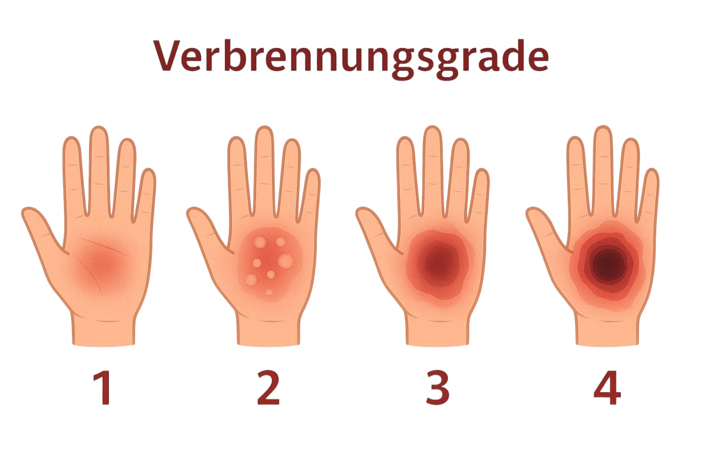

Verbrennungen entstehen durch Hitze, chemische Stoffe, Strahlung oder elektrischen Strom. Sie können unterschiedlich tief sein und verschiedene Hautschichten betreffen. Besonders gefährlich sind sie bei kleinen Kindern, Babys oder älteren Menschen – selbst wenn sie nur klein erscheinen. Auch nachdem die Ursache entfernt wurde, kann der Verbrennungsprozess in der Haut weitergehen. Deshalb ist sofortiges Handeln entscheidend.
Kühlen: Die betroffene Hautstelle sollte mindestens 10 bis 20 Minuten lang mit sauberem, fließendem Wasser gekühlt werden. Dabei ist es angenehmer, das Wasser über die Wunde laufen zu lassen, anstatt es direkt darauf zu richten. Eiskaltes Wasser oder Eis dürfen nicht verwendet werden, da sie die Haut zusätzlich schädigen können.
Kleidung und Schmuck entfernen: Alles, was sich in der Nähe der betroffenen Stelle befindet und nicht an der Haut klebt, sollte vorsichtig entfernt werden. So kann sich die Hitze nicht weiter ausbreiten.
Blasen nicht öffnen: Bilden sich Blasen, dürfen diese keinesfalls aufgestochen werden. Sie dienen als natürlicher Schutz der Haut und verringern das Infektionsrisiko. Bei Blasenbildung oder größeren Verbrennungen sollte ärztliche Hilfe in Anspruch genommen werden.
Wunde abdecken und Person beruhigen: Nach dem Kühlen kann die Wunde mit einem sauberen, nicht klebenden Verband oder einer sterilen Plastikfolie abgedeckt werden. Gleichzeitig ist es wichtig, die betroffene Person zu beruhigen, sie warm zu halten und aufmerksam zu beobachten.
Der Rettungsdienst sollte gerufen werden, wenn die Verbrennung groß oder tief ist, sich im Bereich von Gesicht, Mund, Hals oder Genitalien befindet oder durch Chemikalien, elektrischen Strom oder Flammen verursacht wurde. Auch bei betroffenen Babys, Kleinkindern oder älteren Menschen ist sofortige medizinische Hilfe erforderlich.
Bei einer chemischen Verätzung des Auges sollte das betroffene Auge sofort mit viel sauberem Wasser ausgespült werden. Dabei ist es wichtig, vorhandene Kontaktlinsen während des Spülens zu entfernen und zu verhindern, dass die verdünnte Chemikalie mit der unverletzten Haut oder dem anderen Auge in Kontakt kommt. Wenn Diphoterin zur Verfügung steht, kann dieses Mittel gemäß den Anweisungen auf dem Behälter eingesetzt werden. Andere Produkte sollten nur nach ärztlicher Rücksprache verwendet werden.
Diphoterine ist eine spezielle Spüllösung zur schnellen Neutralisation von chemischen Substanzen. Sie wird bei Verätzungen durch Säuren oder Laugen an Haut und Augen eingesetzt und kann wirksamer als Wasser sein, weil sie verschiedene Chemikalien gleichzeitig neutralisiert. Diphoterine ist vor allem in Laboren, industriellen Arbeitsplätzen und Notfallsets zu finden.
Bei Sonnenbrand sollte eine After-Sun-Lotion gemäß Packungsbeilage aufgetragen werden. Ärztliche Hilfe ist erforderlich, wenn der Sonnenbrand stark ist oder wenn besonders gefährdete Personen wie Babys, ältere Menschen oder Menschen mit chronischen Erkrankungen betroffen sind.
Wenn die Verbrennung großflächig ist, besteht die Gefahr eines Schocks. In diesem Fall sollte die Person sich hinlegen und warm gehalten werden. Dabei sollte die verbrannte Stelle möglichst nicht mit dem Boden in Berührung kommen, um die Wunde sauber zu halten. Die Atmung, Körpertemperatur und Ansprechbarkeit sollten regelmäßig kontrolliert werden.
Merke: Schnelles und umsichtiges Handeln kann viel bewirken. Beruhige die verletzte Person, schütze die Wunde – und warte nicht zu lange, professionelle Hilfe zu rufen.